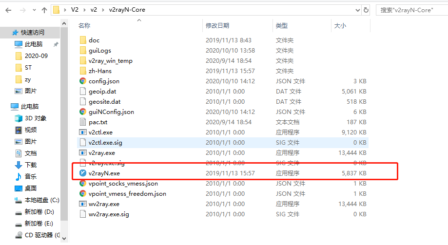
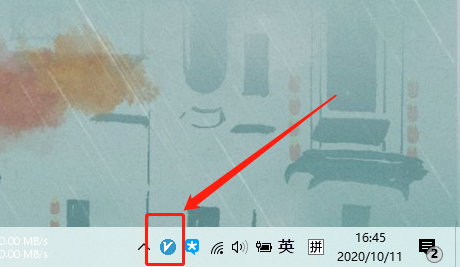
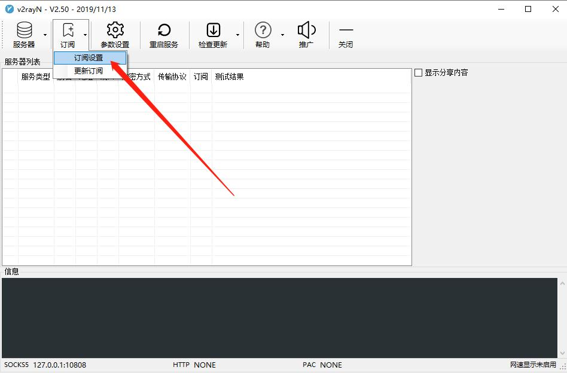
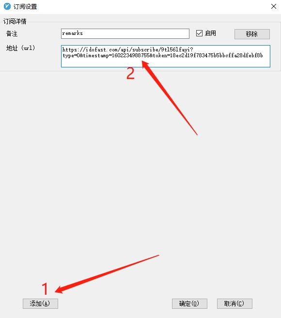
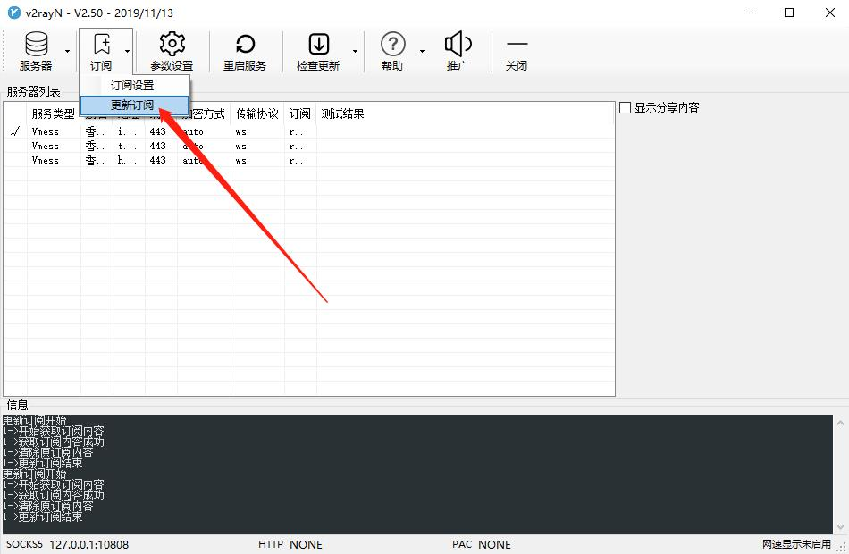
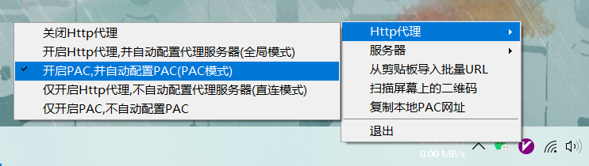
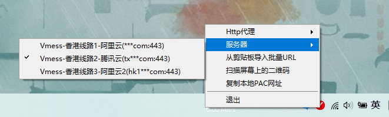

PC端使用教程
第零步(win10请跳过)
win7系统.net版本太低，需要先安装最新.net才能允许该软件
点击此处下载最新.net（下载安装后就不用管了）第一步下载v2rayNG压缩包
点击此处下载v2rayNG压缩包第二步，导入服务器节点
该软件为绿色安装版，无需安装，解压后便可使用。(请注意切勿不解压直接双击点开在预览视图里启动，这样启动的话它会找不到压缩包里其他文件而无法成功代理)
把该压缩包找到一个合适的位置进行解压，找到V2rayN.exe，点击即可运行
运行后会在电脑右下角的托盘里出现一个这样的图标，点击该图标便可调出该程序的主界面
点击订阅设置
在弹出的面标上先点击添加，把自己的订阅地址填入进去，然后点击确定
订阅地址请登陆自己的账号后台获取，点击复制按钮便可把内容复制到剪切板里

回到主页面点击订阅里的更新订阅, 它便会去拉取服务器配置，这时服务器列表会新增几条配置
找到电脑托盘右下角的托盘，右键，把http代理改成开启PAC，并自动配置PAC（PAC模式）
此时已经启动成功，可以拿谷歌测试一下是否可以正常访问国外网站www.google.com
如果想更换服务器，请右键对应的托盘图标，在服务器选项里进行更换
